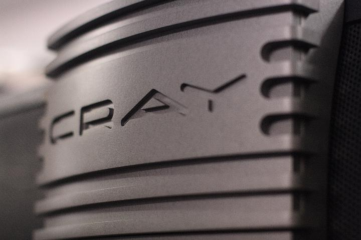

|
|  |
| ExkursionSS2008 092 |
| « | < | 81 | 82 | 83 | 84 | 85 | 86 | 87 | |
| KAMERA: Canon EOS 400D DIGITAL | DATUM: 06.06.08 16:45 | ISO-EINSTELLUNG: 800 | BELICHTUNGSDAUER: 1/80s | ÖFFNUNG: 2.5 | BRENNWEITE: 50.0mm (=81mm) |
| Anzahl Bilder: 87 | Letzte Aktualisierung: 09.06.08 16:15 | Erzeugt von JAlbum 7.3 & Chameleon | Hilfe |